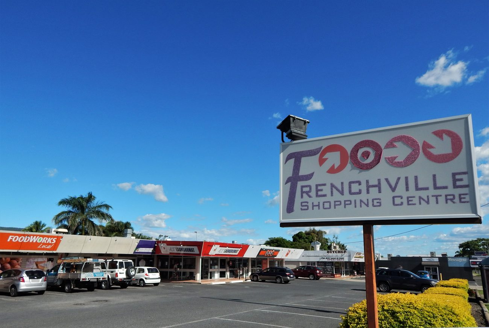

Food safety temperature log: what to record each day (UK)
Daily records for a small UK food business: fridge, freezer, hot-holding and probe temperatures, the legal limits, and what to write when one is wrong.
A daily record of fridge, freezer, hot-holding and cooked-food temperatures is the evidence an environmental health officer may ask to see, and it takes about two minutes once you know which readings matter, which limits are law, and what to write when one is wrong.
Why a daily record matters

If you run a food business from a home kitchen, a stall or a café, you must "make and follow a system for managing food safety". Government guidance describes it as "a written set of processes, checks, rules and records", and temperature checks are one of the records it names.
The inspector will check how food is "prepared, cooked, re-heated, cooled and stored", plus "the processes, training and systems you use to make sure good hygiene is maintained". A daily log answers both. If there is ever a food safety incident, you "will need to show your records as evidence of how you keep food safe".
Safer food, better business (SFBB) is the Food Standards Agency (FSA) pack for small businesses in England and Wales. Its diary is the daily record, and the pack tells you to "store all your completed diary pages safely until your next visit from a local authority food safety officer".
What to record each day, and the limits that matter
One row per day: your equipment temperatures, a probe reading from cooked food, a cleaning tick and a signature. Where the table says "FSA guidance", the figure is advice from FSA pages.
| Reading | Limit | Law or advice | Nation |
| --- | --- | --- | --- |
|---|---|---|---|
| Fridge or chilled display | Set at 5°C or below | FSA advice | FSA guidance |
| Chilled food | 8°C or below | Law | England, Wales and Northern Ireland; recommended in Scotland |
| Frozen food | -18°C or below | FSA advice | SFBB pack (England and Wales) |
| Food kept hot | 63°C or above | Law | Same three nations, plus Scotland |
| Cooked food, centre | 70°C for 2 minutes, or an alternative | FSA advice | FSA guidance; Scotland's food body advises 75°C or above |
| Reheated food | Steaming hot all the way through; no figure given | FSA advice | Same three nations |
| Reheated food | 82°C | Law | Scotland |
| Chilled food out of the fridge | Up to 4 hours, once | Exception in the law | Same three nations |
| Hot food below 63°C | Up to 2 hours, once | Exception in the law | Same three nations |
Cold holding. Chilled food "must be kept at 8°C or below". That is "a legal requirement in England, Wales and Northern Ireland" and recommended in Scotland. The rule is about the food itself: "the requirement is for the temperature of the food, not the surrounding air".
The FSA advises you to "set your fridge to 5°C or below" to leave a margin. Check fridges and chilled displays "at least once a day starting with your opening checks", and check "regularly that the temperature shown on the display/dial is accurate".
Freezing. The SFBB 'Prove it' sheet says: "Frozen food should be kept at -18°C or below." That is advice: we found no legal limit for frozen food in the FSA's guidance on the temperature control law.
Hot holding. "Hot food must be kept at or above 63°C if you're not serving it straight away." Scotland's rule says "above 63°C". Probe the food, not only the cabinet dial, to "prove your method keeps food at a safe temperature of 63°C or above".
Cooked food. "Standard advice is to cook food until it has reached a core temperature of 70°C for 2 minutes." The FSA lists other safe combinations: 75°C for 30 seconds, 80°C for 6 seconds, 65°C for 10 minutes, or 60°C for 45 minutes. Check with "a thermometer with a clean probe into the centre", or the thickest part. Food Standards Scotland advises "75°C or above in the thickest part".
Reheating. Outside Scotland the FSA sets no legal temperature for reheating. Its advice is to "reheat food until it is steaming hot all the way through", and "you can only reheat food once". SFBB says reheated food should reach "a safe temperature in the centre", which points back to the same combinations as cooking.
Cooling. If you will not serve food straight away, "chill it down as quickly as possible and then put it in the fridge". SFBB suggests smaller portions, rice spread on a tray, and covered pans stood in cold water.
No FSA page we checked gives a time for cooling. SFBB instead asks you to prove your method: probe the food when cooked, then "test the temperature again at regular intervals to see how quickly it is dropping".
The time rules. You "can keep chilled food out of the fridge for up to 4 hours, then you must throw it away". If it has been out for less than 4 hours it can go back in the fridge. Either way you can only do this once.
Hot food can sit below 63°C for "up to 2 hours". After that, cool it to 8°C or below as quickly as possible, or throw it away. SFBB suggests you "label foods with the time they were taken out of the fridge or write this information in your diary so you can check the time easily".
Cleaning. "You must be able to prove that you're cleaning effectively", and the FSA tells you to "set up a cleaning schedule and record". SFBB's daily checks ask: "Has cleaning been carried out according to the cleaning schedule". One tick answers that. It counts. "Not cleaning thoroughly is one of the most common reasons why food businesses are prosecuted."
When a reading is out of range, write what you did
Invoices, clients, expenses, quotes and the 12-month forecast — linked and ready for your numbers. One-time price, lifetime updates.
Command Center, $49 → Start freeA bad reading is not a disaster. A bad reading with nothing written beside it is a gap in your records. SFBB's instruction is plain: "write down what went wrong and what you did about it in your diary".
Four things make a useful note:
1. What was wrong: the reading and the time.
2. What you did to put it right.
3. The re-check: the new reading and when you took it.
4. What happened to the food: kept, cooked longer, moved or thrown away.
If a fridge breaks down, "use other equipment, or move the food to a cold area". If you cannot, or do not know how long it has been broken, "contact the Environmental Health Team at your local council for advice".
If hot food is not hot enough, reheat it to a safe temperature and return it to hot holding once, or chill it down safely. "If you cannot do either of these things, throw the food away." If food is undercooked, "cook the food for longer".
"Fridge 2 at 9°C" shows you saw the problem. "Fridge 2 read 9.1°C at 7:40. Door open after delivery. Food moved to fridge 1. Yoghurt probed 4.0°C at 8:10. Kept" shows you dealt with it.
A day in the diary (an illustration)
This day is invented, to show the shape of a good record: two readings are wrong, and each has a note.
| Time | Reading | Limit | Note |
| --- | --- | --- | --- |
|---|---|---|---|
| 7:30 | Fridge 1: 3.9°C | 5°C or below | |
| 7:30 | Fridge 2: 6.4°C | 5°C or below | Door open after delivery. Closed. 8:00 re-check 3.6°C |
| 7:30 | Freezer: -19°C | -18°C or below | |
| 11:50 | Chicken, centre: 68°C | 70°C for 2 minutes | Back in oven 4 minutes. 72°C at 11:56. Served |
| 12:30 | Soup in hot cabinet: 59°C | 63°C or above | Dial turned up. Soup reheated to 74°C at centre and returned. 13:00 re-check 66°C |
| 16:45 | Cleaning | Schedule done | Y |
Two minutes a day: how to keep it small
1. Tie each reading to something you already do: fridge and freezer at opening checks, the probe at the first item of each cooking session, the cleaning tick at closing.
2. Keep the kit together. SFBB's opening check is that your "probe thermometer is working and probe wipes are available".
3. Write at the time. A number written from memory at closing is a guess.
4. Look back once a month. SFBB's 4-weekly review asks you to look over the last four weeks. "If you had a serious problem, or the same thing went wrong three times or more", find out why and record what you did.
5. Look after the probe. Clean and disinfect it before and after use. Check it in iced water (between -1°C and 1°C) and boiling water (between 99°C and 101°C), for example once a month if the maker gives no interval.
England, Wales and Northern Ireland are not Scotland
Scotland's rules "differ significantly" from the rest of the UK. In the FSA's words, "no exact chill temperature is given; that food reheated must reach a temperature of 82°C; and that there are no specified tolerance periods for either the chill or hot holding of food".
That changes three table lines:
- Cold holding has no fixed legal figure in Scotland. The 8°C level is a recommendation, and warmer storage means the shelf life of the food "may need to be reduced".
- Reheating to 82°C is law, unless raising the food that far would spoil it.
- The 4-hour and 2-hour allowances are not written into Scotland's rules.
SFBB is for England and Wales, Northern Ireland has its own "safe catering guidance", and Scotland's equivalent is CookSafe.
The honest limits of a log sheet
A log sheet is one part of your food safety management system, not the whole system. The law still requires you to write down your safe methods, train anyone who helps you, and manage allergens and cross-contamination.
The FSA guidance we read sets no fixed frequency for probing. SFBB's review asks only whether "prove it checks" are "completed regularly and recorded". Pick one and write it into your own system.
The sheet cannot check what you type. It will flag a reading outside its limit and a missing note, but a number nobody measured is not a record.
Get the free sheet
The Free Food Safety Log (UK) is an Excel workbook that also opens in Google Sheets. It is free, with no signup and no email.
It holds 31 days, one row per day: the date, four equipment temperatures you can rename, a probe reading with what was probed, a cleaning tick, a corrective action and a signature. A reading outside its limit turns red, and the Check column names each fault.
The freezer limit starts at -18°C, the Food Standards Agency's advice; change it if your own system says otherwise. Save a fresh copy each month, and keep the finished copies until the officer visits.
Invoices, expenses, clients, quotes and a 12-month cashflow forecast — linked in one workbook. One-time price, lifetime updates.
Buy the Command Center — $49 → Start with the free forecaster